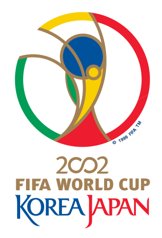
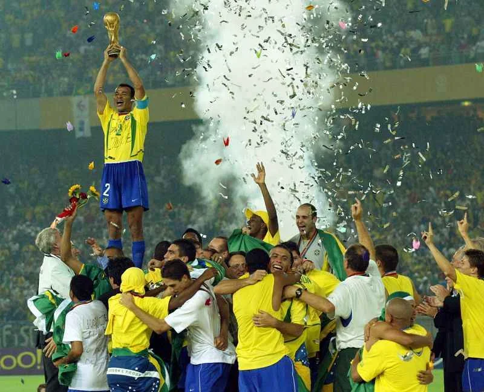

TUDO SOBRE O PENTACAMPEÃO DA COPA DE 2002

O ano de 2002 é amplamente lembrado no Brasil pela conquista histórica do Pentacampeonato Mundial de Futebol na Copa do Mundo sediada na Coreia do Sul e no Japão. Sob o comando do técnico Luiz Felipe Scolari, a Seleção Brasileira venceu a Alemanha por 2 a 0 na grande final, com dois gols de Ronaldo Fenômeno.

A campanha do Brasil em 2002 foi perfeita, alcançando a marca de sete vitórias em sete jogos. O time base que entrou em campo na final contra a Alemanha foi formado por Marcos; Cafu, Lúcio, Roque Júnior e Roberto Carlos; Edmílson, Gilberto Silva, Kléberson e Rivaldo; Ronaldinho Gaúcho e Ronaldo. Ronaldo terminou a competição como artilheiro com 8 gols, enquanto o capitão Cafu ergueu a taça.